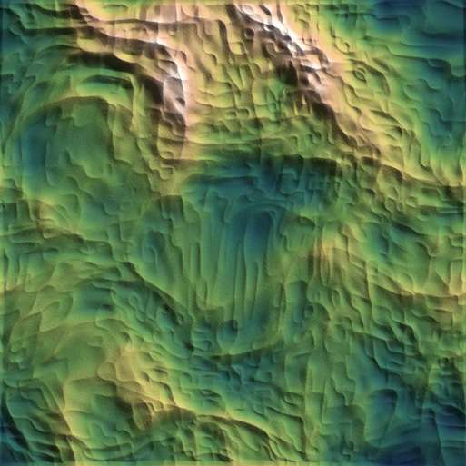
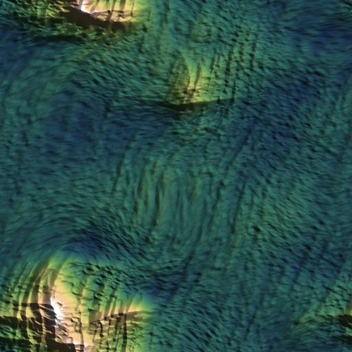
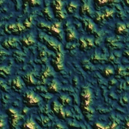

Uniform noise at every scale: mins float 3–76m, maxes 77–188m per cell — no floor, no feature placement. 18° mean slope.

Integer shears kill the diamond lattice; regional classes, mountain belts wrap the tile edges (seam verified). 22° mean / 6% steep (terrainstats, hs 1.5).

"Floor + peaks" signature: every cell's min ~0–2m, maxes vary 60–125m. 33° mean / 26% steep.
generated by genhills.js — per-octave integer shears + per-axis cell counts (wrap-safe anisotropy), plains/belts mask 0.65+0.7 → 0.40+1.05. commit 70f47d1b